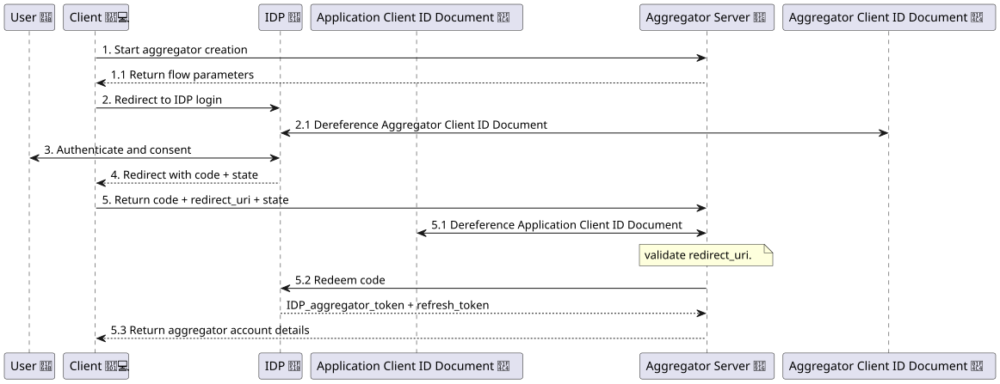
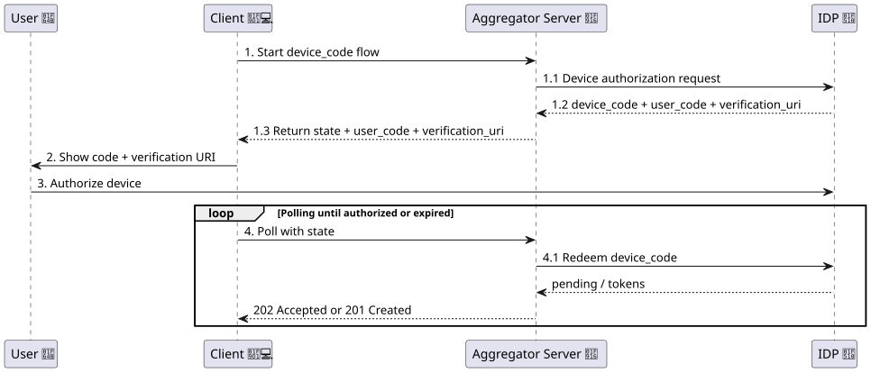
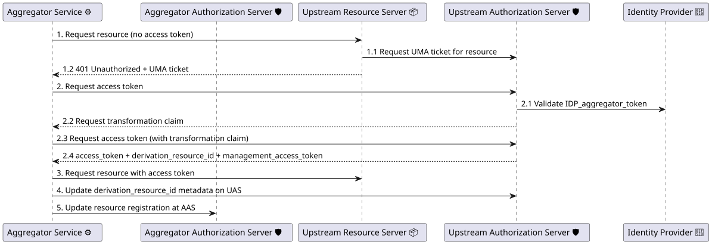
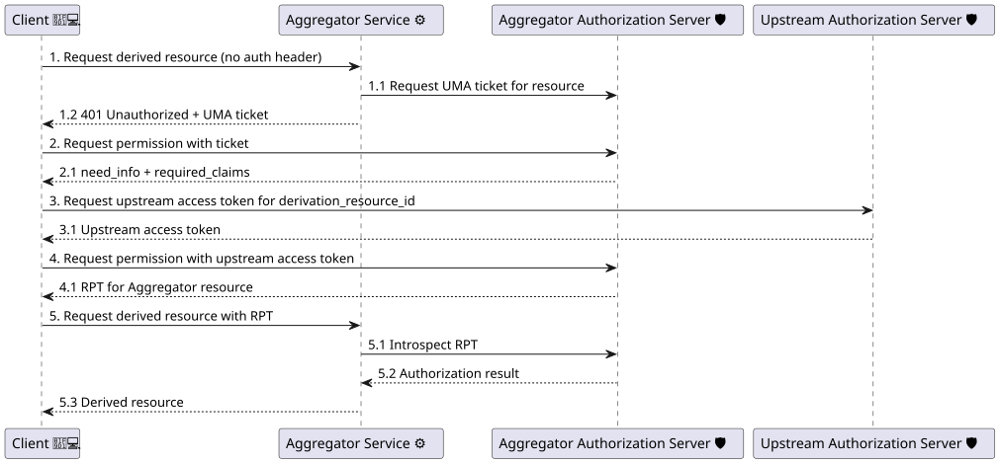

1. Introduction
This specification defines the Aggregator Protocol, an HTTP-based interface that lets a client create and manage Aggregator
Instances and configure Aggregator Services that execute data transformations. Transformations are described and discovered
using the Function Ontology (FnO) [FNO]; a service is configured by referencing a transformation (a fno:Execution) and
providing its parameters, after which the client can retrieve the derived result from the output defined by that function.
Clients start from the Aggregator Server Description at the server base URL to discover the registration endpoint, supported registration flows, and the server’s transformation catalog (§ 4 Aggregator Server Metadata). Using the registration endpoint, a client creates (or manages) an Aggregator Instance (§ 5.1 Aggregator Registration Endpoint) and then follows the instance’s Aggregator Description to find the instance’s service collection and transformations endpoint (§ 7.1 Aggregator Description and § 8 Aggregator Service Management).
All management operations are authenticated and authorized. This protocol integrates with OpenID Connect [OIDC-Core] for identity and uses UMA-style authorization [UMA] for protected resources, scopes, and tickets as described in § 6 Aggregator Security Model (Authentication & Authorization).
Servers MUST support JSON (application/json) where specified and MAY additionally provide semantically annotated RDF
representations (e.g., JSON-LD or Turtle) via HTTP content negotiation. The Aggregator vocabulary (§ 9 Vocabulary) provides
stable IRIs for classes and predicates used throughout the specification.
2. Definitions
This section defines terminology used throughout this specification. Where applicable, terms are aligned with external specifications such as WebID Profiles [WEBID-PROFILE], OpenID Connect (OIDC) [OIDC-Core], OAuth 2.0 [RFC6749], and User-Managed Access (UMA) [UMA].
2.1. Core Roles and Components
-
Client: An application acting on behalf of an end-user to create Aggregator Instances and configure Aggregator Services.
-
Aggregator Server: The server deployment that exposes public discovery metadata and a registration API used to create and manage Aggregator Instances.
-
Aggregator Instance (or “Aggregator”): A user- or tenant-scoped logical instance created via the registration endpoint. An instance exposes an Aggregator Description and an authenticated management API for configuring services.
-
Aggregator Service (or “Service”): A configured data processing pipeline inside an Aggregator Instance. A service is represented as an FnO execution (
fno:Execution) that identifies the executed function and its inputs; outputs are described by the function’s output parameters (see § 8 Aggregator Service Management). -
Transformation Catalog: A catalog that describes the transformations supported by the Aggregator Server or Aggregator Instance (see § 4.3 Server-level Transformation Catalog and § 7.2 Instance-level Transformations Catalog).
2.2. Identity, Authorization, and Tokens
-
User (End-user): A person or agent that owns or controls resources and uses a Client to configure an Aggregator deployment.
-
WebID: An HTTP(S) IRI that identifies an agent and can be dereferenced to obtain a WebID Profile document mainly to discover the user’s IdP (defined in [WEBID-PROFILE]).
-
Identity Provider (IdP): An OpenID Connect Provider following the OIDC spec ([OIDC-Core]) that authenticates a user based on it’s userID and issues ID tokens used by this protocol during registration and authorization workflows.
-
Authorization Server (AS): An OAuth 2.0 Authorization Server that supports UMA as defined in ([A4DS]) and issues Requesting Party Tokens (RPTs) for protected resources.
-
Resource Server (RS): An HTTP server that hosts protected resources. In UMA terminology, a Resource Server protects resources and interacts with an Authorization Server to obtain UMA tickets and validate RPTs.
-
UMA Ticket: A value returned in a
WWW-Authenticate: UMA ...challenge when a client requests a protected resource without sufficient authorization. The client presents the ticket to the Authorization Server to obtain an RPT. -
Requesting Party Token (RPT): An OAuth 2.0 token issued by an Authorization Server under UMA that encodes permissions/scopes for a protected resource (see [RFC6750]).
-
ID Token: An OpenID Connect ID token representing the authenticated user (and, depending on the deployment, the client). The protocol uses ID tokens as claim tokens in UMA exchanges and during registration flows as described in § 6 Aggregator Security Model (Authentication & Authorization).
-
Client ID Document: A dereferenceable client metadata document that follows the OAuth Client ID Metadata Document specification [Client-ID].
2.3. Namespaces
The following namespace prefixes are used throughout this specification and SHOULD appear in RDF serializations (e.g., Turtle, JSON-LD contexts):
-
aggr:→https://spec.knows.idlab.ugent.be/aggregator-protocol/latest/# -
dct:→http://purl.org/dc/terms/ -
fno:→https://w3id.org/function/ontology# -
dcat:→https://www.w3.org/ns/dcat# -
dcterms:→http://purl.org/dc/terms/ -
owl:→http://www.w3.org/2002/07/owl# -
rdf:→http://www.w3.org/1999/02/22-rdf-syntax-ns# -
rdfs:→http://www.w3.org/2000/01/rdf-schema# -
xsd:→http://www.w3.org/2001/XMLSchema#
3. Architecture & Resource Model
This section describes the high-level architecture of an Aggregator deployment and the resource model exposed by this specification. It connects the terminology in § 2 Definitions to the endpoint definitions in later sections.
3.1. Actors and Responsibilities
The protocol distinguishes the following parties:
-
Client: An application acting on behalf of an end-user to create Aggregator Instances and configure Aggregator Services.
-
Aggregator Server: The server that exposes public discovery information and a registration API to create Aggregator Instances.
-
Aggregator Instance: A user-specific (or tenant-specific) logical instance created via registration, exposing instance metadata and a management API.
-
Aggregator Service: A configured data-processing pipeline created and managed within an Aggregator Instance.
-
Identity Provider (IdP): Issues OIDC tokens used to prove identity as part of registration and upstream authorization flows.
-
Authorization Server (AS): A UMA-capable OAuth2 Authorization Server that issues RPTs for protected resources.
-
Resource Server (RS): An upstream resource server hosting data that the Aggregator Service may access on behalf of the user.
3.2. Resource Types
This specification defines HTTP resources at three levels:
-
Aggregator Server resources: metadata and instance registration (see § 4 Aggregator Server Metadata and § 5.1 Aggregator Registration Endpoint).
-
Aggregator Instance resources: instance metadata and service management (see § 7 Aggregator Metadata and § 8 Aggregator Service Management).
-
Aggregator Service resources: a service collection and individual services managed under the instance (see § 8.1 Service Collection Endpoint and § 8.2 Service Resource).
3.3. Base URLs and Addressing
An implementation MUST define a stable base URL for:
-
the Aggregator Server (the
aggregator-server-url); and -
each Aggregator Instance (the
aggregator-url).
An implementation MAY use either of the following instance addressing patterns:
-
Host-based instances:
https://{instance-id}.aggregator.example/ -
Path-based instances:
https://aggregator.example/{instance-id}/
Clients SHOULD treat server-provided URLs as authoritative and avoid constructing URLs by string concatenation. Unless a path is explicitly fixed, the concrete URLs shown in this document serve as illustrative defaults; deployments MAY use different locations as long as the relevant metadata resources advertise the authoritative links.
3.4. Discovery and Entry Points
-
The Aggregator Server exposes a public discovery resource at its server base URL (see § 4.1 Aggregator Server Description).
-
Clients create (or obtain access to) an Aggregator Instance via the registration API (see § 5.1 Aggregator Registration Endpoint).
-
The resulting instance base URL is the entry point for instance metadata (see § 7 Aggregator Metadata) and instance management (see § 8 Aggregator Service Management).
3.5. Security Boundaries
All security requirements are defined in § 6 Aggregator Security Model (Authentication & Authorization). At a high level:
-
Public (no authentication): the server description (see § 4.1 Aggregator Server Description) and the resources it links to, such as the server level transformation catalog and Client ID Document (see § 4.3 Server-level Transformation Catalog and § 4.2 Client ID Document).
-
Protected (OIDC): the registration endpoint (see § 5.1 Aggregator Registration Endpoint), and possibly the server description and server level transformation catalog depending on the implementation.
-
Protected (UMA): the instance metadata resource (see § 7 Aggregator Metadata) and all resources under the service management API (see § 8 Aggregator Service Management).
The aggregator and its clients SHOULD use secure transport (HTTPS) for all communication, and SHOULD use DPOP tokens
wherever possible to bind tokens to the client. Aggregator endpoints intended for browser-based clients MUST support CORS.
Unless the client and Aggregator are tightly coupled and deployed under the same origin, the server MUST answer OPTIONS
preflight requests and include appropriate Access-Control-Allow-* headers for the methods and headers used by this
specification (including Authorization, Content-Type, and Accept). Implementations MAY restrict allowed origins to
trusted client origins.
3.6. Example URL Layout (Non-normative)
Given an Aggregator Server at https://aggregator.example/ and a path-based Aggregator instance at
https://aggregator.example/abc123/:
-
Server description:
https://aggregator.example/ -
Registration:
https://aggregator.example/registration -
Transformation catalog:
https://aggregator.example/transformations -
Instance description:
https://aggregator.example/abc123/ -
Instance Transformation catalog:
https://aggregator.example/abc123/config/transformations -
Service collection:
https://aggregator.example/abc123/config/services
4. Aggregator Server Metadata
This section describes the public endpoints exposed by the Aggregator Server for discovery and metadata retrieval. Except for the Aggregator Server Description at the server base URL, implementations MAY expose the remaining endpoints at deployment-specific URLs; the server description document MUST include absolute URLs for each resource so that clients can discover them.
4.1. Aggregator Server Description
The Aggregator Server Description is a public document that allows clients to discover the Aggregator Server’s
endpoints and capabilities. This document MUST be available at the server base URL (i.e., {aggregator-server-url}/), MUST
be accessible without authentication, and MUST provide at least the following information. Each JSON member is paired with
an RDF predicate from § 9 Vocabulary so the document can also be served as JSON-LD or other RDF formats using content
negotiation based on [RFC9110]:
In semantically annotated representations, the Aggregator Server Description MUST state that the described resource has RDF
type aggr:AggregatorServer (§ 9.1.3 aggr:AggregatorServer) (e.g., via @type in JSON-LD or a aggr:AggregatorServer
in Turtle). Clients MAY rely on this type statement when consuming semantic representations.
- registration_endpoint (REQUIRED):
-
The value is a string containing the absolute URL of the Aggregator Registration Endpoint (§ 5.1 Aggregator Registration Endpoint); in the RDF representations, this member maps to the predicate
aggr:registrationEndpoint(§ 9.2.10 aggr:registrationEndpoint). - supported_registration_types (REQUIRED):
-
The value is a JSON array of strings identifying the supported registration flow tokens at
registration_endpoint; in the RDF representations, each entry maps to anaggr:supportedRegistrationTypetriple (§ 9.2.11 aggr:supportedRegistrationType) whose object is the corresponding flow class IRI.Each member MUST be one of the registration flow tokens defined in § 5.1 Aggregator Registration Endpoint:
-
"provision"(RDF classaggr:ProvisionFlow(§ 9.1.8 aggr:ProvisionFlow)) -
"authorization_code"(RDF classaggr:AuthorizationCodeFlow(§ 9.1.9 aggr:AuthorizationCodeFlow)) -
"device_code"(RDF classaggr:DeviceCodeFlow(§ 9.1.10 aggr:DeviceCodeFlow))
- registration_request_formats_supported (REQUIRED):
-
The value is a JSON array of strings identifying the supported request formats for the
registration_endpoint. Each entry MUST be a media type; in RDF representations, each entry maps to anaggr:registrationRequestFormatSupportedtriple (§ 9.2.12 aggr:registrationRequestFormatSupported). Servers MUST include eitherapplication/jsonorapplication/x-www-form-urlencodedor both. - version (REQUIRED):
-
The value is a string containing the semantic version ([SEMVER]) of the Aggregator specification that the server adheres to; in the RDF representations, this member maps to the predicate
aggr:specVersion(§ 9.2.13 aggr:specVersion). - client_identifier (REQUIRED):
-
The value is a string containing the absolute URL of the Client ID Document (§ 4.2 Client ID Document); in the RDF representations, this member maps to the predicate
aggr:clientIdentifier(§ 9.2.14 aggr:clientIdentifier). - transformation_catalog (REQUIRED):
-
The value is a string containing the absolute URL of the Public Transformation Catalog (§ 4.3 Server-level Transformation Catalog); in the RDF representations, this member maps to the predicate
aggr:transformationCatalog(§ 9.2.15 aggr:transformationCatalog).
{ "@context" : { "aggr" : "https://spec.knows.idlab.ugent.be/aggregator-protocol/latest/#" , "provision" : "aggr:ProvisionFlow" , "authorization_code" : "aggr:AuthorizationCodeFlow" , "registration_request_formats_supported" : "aggr:registrationRequestFormatSupported" , "registration_endpoint" : { "@id" : "aggr:registrationEndpoint" , "@type" : "@id" }, "supported_registration_types" : { "@id" : "aggr:supportedRegistrationType" , "@type" : "@vocab" }, "version" : { "@id" : "aggr:specVersion" }, "client_identifier" : { "@id" : "aggr:clientIdentifier" , "@type" : "@id" }, "transformation_catalog" : { "@id" : "aggr:transformationCatalog" , "@type" : "@id" } }, "@id" : "https://aggregator.example/" , "@type" : "aggr:AggregatorServer" , "registration_endpoint" : "https://aggregator.example/registration" , "supported_registration_types" : [ "provision" , "authorization_code" ], "registration_request_formats_supported" : [ "application/json" , "application/x-www-form-urlencoded" ], "version" : "1.0.0" , "client_identifier" : "https://aggregator.example/client.json" , "transformation_catalog" : "https://aggregator.example/transformations" }
4.2. Client ID Document
Endpoint that exposes the Client ID Document of the aggregator used for authorization. Servers MAY host this document at any
URL; the client_identifier property in the Aggregator Server Description MUST contain the authoritative absolute URL. The
Client ID Document MUST conform to the OAuth Client ID Metadata Document specification [Client-ID]. In the case for the
aggregator, the redirect_uris property is OPTIONAL instead of REQUIRED, as multiple clients MAY create an Aggregator on
the same Aggregator Server (depending on the implementation). Adding this property allows an Aggregator Server
implementation to restrict which clients may create aggregators on the server.
4.3. Server-level Transformation Catalog
This endpoint returns a RDF document describing the transformations supported by the aggregator server on a server level.
Servers MAY publish this catalog at any deployment-specific URL; the Aggregator Server Description MUST advertise it via the
transformation_catalog field. This RDF document SHOULD be exposed using content negotiation based on HTTP. The
transformations MUST be described using FnO [FNO]. The document MAY be protected using an OIDC ID Token.
The types (fno:type) of the parameters and outputs of the functions SHOULD be a class (owl:Class) that is a subclass
(rdfs:subClassOf) of a Data Catalog ([Data-Catalog]) entity like dcat:DataService. This entity SHOULD then be further
described using Data Catalog properties to indicate the supported endpoints for the parameters and outputs. The Data
Catalog Vocabulary recommends using entities from other vocabularies like Friend of a Friend ([FOAF]) and Dublin Core
Metadata Terms ([DCTERMS]). Pre defined pipelines (using fno:Composition) MAY also be described in this document.
Finally, the catalog MAY also include external entities using rdfs:seeAlso to link to external functions, pipelines or
Data Catalog entities.
The specificity of the transformation is up to the server owner. The functions MAY have a link to an implementation with
fno:Implementation if needed.
@prefix aggr: <https://spec.knows.idlab.ugent.be/aggregator-protocol/latest/#> . @prefix trans: <http://aggregator.example.org/transformations#> . @prefix fno: <https://w3id.org/function/ontology#> . @prefix rdf: <http://www.w3.org/1999/02/22-rdf-syntax-ns#> . @prefix xsd: <http://www.w3.org/2001/XMLSchema#> . <> a aggr : TransformationCollection ; dct : title "Aggregator transformations" ; aggr : hasTransformation trans : QuerySources . aggr : hasTransformation <https://external.example.org/AggregateSources> . rdfs : seeAlso <https://external.example.org/AggregateSources> . trans : QuerySources a fno : Function ; fno : name "A Aggregator Service that combines a list of sources" ^^ xsd : string ; fno : expects ( trans : Sources trans : Query ) ; fno : returns ( trans : Result ) . trans : Sources a fno : Parameter ; fno : predicate trans : sources ; fno : type rdf : List ; fno : required "true" ^^ xsd : boolean . trans : Query a fno : Parameter ; fno : predicate trans : query ; fno : type xsd : string ; fno : required "true" ^^ xsd : boolean . trans : Result a fno : Output ; fno : predicate trans : result ; fno : type trans : SPARQLProtocol . trans : SPARQLProtocol a owl : Class ; rdfs : subClassOf dcat : DataService ; dcterms : conformsTo <https://www.w3.org/TR/sparql12-protocol/> .
5. Aggregator Management
This section describes how Aggregator Instances are managed at the Aggregator Server level. Deployments define their own authorization policy for these endpoints, but they MUST require authenticated requests so the Aggregator provider can authorize a user to manage their aggregators. The tokens used in these requests (IDP_client_token) prove the identity of
the user and the client (Client ID Document) used to access the Aggregator Server. Deployments MAY expose the same
functionality at different paths, provided that the Aggregator Server Description advertises the authoritative URLs.
5.1. Aggregator Registration Endpoint
This section specifies the behavior of theregistration_endpoint advertised by the Aggregator Server Description
(§ 4.1 Aggregator Server Description). The endpoint supports creating Aggregator Instances, replacing the stored token set for an
existing instance, and deleting an instance. If the registration_type isn’t none the endpoint SHOULD reject
unauthenticated requests with 401 Unauthorized.
should we allow a name field for the aggregator during creation?
POST-
Creates an Aggregator Instance or replaces the stored token set for an existing instance. The request body MUST use a content type listed in
registration_request_formats_supportedand MUST include: When usingapplication/json, the body MUST be a JSON object. When usingapplication/x-www-form-urlencoded, the body parameters MUST be encoded as form fields with the same member names. The server MUST supportapplication/jsonand MAY supportapplication/x-www-form-urlencoded.-
registration_type (REQUIRED): The value is a string token; it MUST be one of the
supported_registration_typesadvertised in the Aggregator Server Description (§ 4.1 Aggregator Server Description). The following string tokens are defined, each corresponding to an RDF class in the Aggregator vocabulary (§ 9 Vocabulary) for semantically annotated representations:-
"none"↔aggr:NoAuthFlow(§ 9.1.7 aggr:NoAuthFlow) -
"provision"↔aggr:ProvisionFlow(§ 9.1.8 aggr:ProvisionFlow) -
"authorization_code"↔aggr:AuthorizationCodeFlow(§ 9.1.9 aggr:AuthorizationCodeFlow) -
"device_code"↔aggr:DeviceCodeFlow(§ 9.1.10 aggr:DeviceCodeFlow)
-
-
aggregator (string, OPTIONAL): When present, the request targets an existing Aggregator Instance and the server MUST replace its stored access token and refresh token with a new set obtained from the Identity Provider (IdP). This is not a refresh-token grant; it is a full re-authentication to obtain a fresh access token and refresh token.
Depending on
registration_type, additional members are defined:-
registration_type: "none"
-
No additional members are required.
In this flow the Aggregator Instance has no identity and all requests to upstream resource servers will be unauthenticated. All hosted resources MUST be public or accessible without authentication. In this flow the registration post request MIGHT not require authentication, depending on the deployment’s policy.
-
-
registration_type: "provision"
-
No additional members are required.
In this flow the Aggregator server MUST provision an identity for the Aggregator Instance that is registered at the Identity Provider (IdP).
-
-
registration_type: "authorization_code" The
authorization_codeflow uses twoPOSTmessages to theregistration_endpoint. It is based on the OAuth 2.0 Authorization Code grant [RFC6749] (https://datatracker.ietf.org/doc/html/rfc6749). The Start Request bootstraps PKCE [RFC7636], the request body MUST include:-
registration_type (string, REQUIRED):
"authorization_code". -
authorization_server (string, REQUIRED): The URL of the UMA Authorization Server that governs access to resources exposed by the Aggregator.
The server MUST respond with
201 Createdand a JSON object containing:-
aggregator_client_id (string, REQUIRED): The Client ID Document of the aggregator.
-
code_challenge (string, REQUIRED)
-
code_challenge_method (string, REQUIRED)
-
state (string, REQUIRED)
The server MAY also include IdP discovery hints (for example
issuerorauthorization_endpoint) if the client cannot determine them through other means.The Finish Request redeems the authorization code, the request body MUST include:
-
registration_type (string, REQUIRED):
"authorization_code". -
code (string, REQUIRED): The authorization code issued by the IdP.
-
redirect_uri (string, REQUIRED): The redirect URI used in the authorization request.
-
state (string, REQUIRED): The
statereturned by the start request.
The finish request reuses the stored
authorization_serverfrom the start request and the client SHOULD NOT include it again. This flow uses two Client ID Documents: the Aggregator Client ID Document and the application Client ID Document identified by the client_id URI in theaudclaim. If the Aggregator Client ID Document (§ 4.2 Client ID Document) doesn’t haveredirect_urisregistered, the Aggregator Server MUST verify thatredirect_uriin the request matches one of the redirect URIs registered in the Client ID Document of the client application. The client application’s Client ID Document MUST be the client_id URI in theaudclaim of theIDP_client_tokenfrom the authorization header in the Start Request request. If theaudclaim is missing or does not contain a dereferenceable client identifier, the server MUST respond with400 Bad Request. In deployments where the client application does not have a Client ID Document, the Aggregator Server MUST requireredirect_uristo be registered in the Aggregator Client ID Document which will be validated by the IDP. If the Aggregator Client ID Document hasredirect_urisregistered, it MAY skip the Client ID Document check of the client application. In all cases, the server MUST verify that thestatematches the stored state for the pending registration. -
-
registration_type: "device_code" The
device_codeflow uses twoPOSTmessages to theregistration_endpointand follows the OAuth 2.0 Device Authorization Grant [RFC8628]. This flow is intended for headless components (for example CLI tools) to authenticate an Aggregator Instance where theauthorization_codeflow is not practical. The Start Request initiates device authorization flow and the request body MUST include:-
registration_type (string, REQUIRED):
"device_code". -
authorization_server (string, REQUIRED): The URL of the UMA Authorization Server that governs access to resources exposed by the Aggregator.
The server MUST determine the IdP from the
IDP_client_tokenin the authorization header (for example, via theissclaim and discovery), request device authorization at the IdP, securely store the returned device_code, and respond with 201 Created and a JSON object containing:-
state (string, REQUIRED): Opaque value used by the client to poll completion of the device flow.
-
user_code (string, REQUIRED): The end-user verification code issued by the IdP.
-
verification_uri (string, REQUIRED): The end-user verification URI on the IdP.
-
verification_uri_complete (string, OPTIONAL): A verification URI that includes the "user_code" (or other information with the same function as the "user_code"), which is designed for non-textual transmission.
-
expires_in (number, REQUIRED): The lifetime in seconds of the device authorization session.
-
interval (number, OPTIONAL): Minimum polling interval in seconds, this may differ from the interval the IdP recommends.
The
device_codeis confidential and MUST NOT be returned to the client. The Poll Request checks whether the user has authorized the device code. The client uses thestatevalue to poll for completion, the request body MUST include:-
registration_type (string, REQUIRED):
"device_code". -
state (string, REQUIRED): The
statevalue returned by the start request.
Unlike a traditional OAuth device flow, the client does not poll the IdP directly. Upon receiving a poll request, the Aggregator MUST attempt to redeem the stored device_code at the IdP token endpoint (grant_type=urn:ietf:params:oauth:grant-type:device_code). If authorization is not yet complete, the server MUST respond with 202 Accepted. When authorization succeeds, the server creates (or updates) the Aggregator Instance and responds as for other successful create/update operations (see below). If the device authorization session has expired, the server MUST respond with 400 Bad Request. The device authorization session MUST be bound to the authenticated caller.
-
Success responses For successful
POSTrequests that create/update an Aggregator Instance (i.e., provision, the authorization_code finish request, and successful device_code poll requests), the server MUST respond with:-
201 Createdwhen it created a new Aggregator Instance (i.e., noaggregatorwas provided). -
200 OKwhen it replaced the token set for an existing Aggregator Instance (i.e.,aggregatorwas provided).
For successful
POSTrequests that create/update an Aggregator Instance (i.e., all types except theauthorization_codeanddevice_codestart requests), the response MUST be a JSON object and MUST include:-
aggregator (string, REQUIRED): Absolute URL of the Aggregator Instance base URL that dereferences to the Aggregator Description (§ 7.1 Aggregator Description).
-
subject (string, OPTIONAL): The WebID or Client_ID for which OIDC tokens were created. This MUST be added to the response when the request was a registration type
provision. -
idp (string, OPTIONAL): The Identity Provider (IdP) that issued the OIDC tokens for the Aggregator Instance. This MUST be added to the response when the request was a registration type
provisionand the subject is not a WebID.
The server MUST NOT return any IdP access tokens, refresh tokens, or user credentials to the client. When a registration flow completes successfully (for example
provision,authorization_codefinish, or a successfuldevice_codepoll), the server obtains and stores an IdP access token for the Aggregator Instance (theIDP_aggregator_token) and an optionally accompanying refresh token. These tokens are used by the Aggregator for upstream access and are not returned to the client.Token replacement rules To update the tokens for an existing Aggregator Instance, the client MUST include the
aggregatormember along with the other required members for the selectedregistration_type. This SHOULD only be done for the followingregistration_typevalues, for other values the server SHOULD respond with400 Bad Request:-
authorization_code: To obtain a new access token and refresh token after the previous ones have expired. -
device_code: To obtain a new access token and refresh token after the previous ones have expired.
-
GET-
This method returns the list of Aggregator Instances owned by the authenticated user. The server MUST respond with
200 OKand a JSON array containing zero or more Aggregator Description URLs (§ 7.1 Aggregator Description). DELETE-
Deletes an existing Aggregator Instance. The request body MUST use a content type listed in
registration_request_formats_supported. When usingapplication/json, the body MUST be a JSON object. When usingapplication/x-www-form-urlencoded, the body parameters MUST be encoded as form fields with the same member names. The request body MUST include:-
aggregator (string, REQUIRED): Absolute URL of the Aggregator Instance base URL that dereferences to the Aggregator Description (§ 7.1 Aggregator Description).
If deletion succeeds the server MUST respond with
204 No Content. -
For error conditions, the server MUST respond with:
-
400 Bad Requestfor a malformed request body or missing/invalid request members for the selectedregistration_type. -
401 Unauthorizedwhen the request is missing authentication or when theIDP_client_tokenis invalid. -
403 Forbiddenwhen the authenticated user is not allowed to manage the requested Aggregator Instance. -
404 Not Foundwhenaggregatoris provided but does not identify an existing Aggregator Instance. A403 ForbiddenMAY also be returned in this case. -
415 Unsupported Media Typewhen the request format is not listed inregistration_request_formats_supported.
5.2. Aggregator Management Flows (Non-normative)
This section gives non-normative examples of how a client can use theregistration_endpoint to create,
delete, and re-authenticate an Aggregator Instance.
5.2.1. Creation provision Flow
The provision flow allows clients to create an Aggregator with its own identity.
This lets resource owners target access-control policies at the aggregator’s dedicated WebID instead of having
the aggregator impersonate another user’s WebID.
1. Client starts flow with Aggregator Server
The client calls the registration endpoint authenticated with its IDP_client_token.
POST /registration HTTP / 1.1 Authorization : Bearer <IDP_client_token> Content-Type : application/json { "registration_type" : "provision" }
2. Aggregator Server provisions an account at an IDP
The Aggregator Server provisions an account at an IDP.
This might be linked to a WebID document that conforms to the WebID Profile specification [WEBID-PROFILE].
Using the credentials of this account the Aggregator Server can perform a client credentials grant to obtain
the IDP_aggregator_token (and accompanying refresh token) to authorize the aggregator acting under its own
WebID.
3. Aggregator Server creates an aggregator
Using the obtained tokens, the Aggregator Server creates an aggregator linked to the user, and returns the aggregator description (§ 7.1 Aggregator Description). The aggregator should not give these tokens or credentials to the client.
HTTP / 1.1 201 Created Content-Type : application/json { "aggregator" : "https://aggregator.example/aggregators/agg-7890/" , "subject" : "https://aggregator.example/webid#me" }
Or with a non-WebID subject:
HTTP / 1.1 201 Created Content-Type : application/json { "aggregator" : "https://aggregator.example/aggregators/agg-7890/" , "subject" : "aggregator@example.com" , "idp" : "https://idp.example/" }
5.2.2. Creation authorization_code Flow
The authorization_code flow allows clients to create an aggregator that acts on behalf of the end-user, but
with a token that is scoped specifically for the aggregator. This flow follows the OAuth 2.0 Authorization
Code grant [RFC6749] (https://datatracker.ietf.org/doc/html/rfc6749).

1. Client starts flow with Aggregator Server
The client begins by asking the Aggregator to bootstrap an authorization_code registration and indicate which
authorization server should be used. The Aggregator identifies the client application from the
IDP_client_token and responds with the public parameters required for the OIDC authorization request.
POST /registration HTTP / 1.1 Authorization : Bearer <IDP_client_token> Content-Type : application/json { "registration_type" : "authorization_code" , "authorization_server" : "https://as.example" }
1.2 Aggregator responds with public parameters
The Aggregator generates the PKCE verifier/challenge pair plus a random state, persists them together with
the pending registration, and returns only the public portions (aggregator_client_id, code_challenge,
code_challenge_method, state) to the client application. The authorization_server value identifies the
UMA Authorization Server (AS) that governs access to resources exposed by the Aggregator. The aggregator uses
the IDP_client_token to identify the user’s IdP and Application Client ID Document for the subsequent OIDC
exchange.
HTTP / 1.1 201 Created Content-Type : application/json { "aggregator_client_id" : "https://aggregator.example/client.jsonld" , "code_challenge" : "1uLSZp2..." , "code_challenge_method" : "S256" , "state" : "1eb7c8f5..." }
2. Client sends the end-user through the IDP authorization endpoint
Using the information supplied by the Aggregator, the client constructs an authorization request against the IdP.
GET https://idp.example/authorize?
response_type=code&
client_id=https%3A%2F%2Faggregator.example%2Fclient.jsonld&
redirect_uri=https%3A%2F%2Fapp.example%2Fcallback&
scope=openid%20webid%20offline_access&
code_challenge=1uLSZp2...&
code_challenge_method=S256&
state=1eb7c8f5...
2.1 IDP dereferences the Aggregator Client ID Document
If the IDP does not already have the aggregator_client_id registered, it dereferences the Aggregator’s
Client ID Document to retrieve the client metadata (for example redirect URIs and other policy-required fields).
3. User authenticates and consents at the IDP
The IDP performs its usual login and consent screens, after which it issues an authorization_code tied to the Aggregator’s client.
4. IDP redirects the user agent back to the client’s redirect_uri
The IDP redirects the user agent back to the client application with the authorization code and the original state.
HTTP / 1.1 302 Found Location : https://app.example/callback?code=SplxlOBeZQQYbYS6WxSbIA&state=1eb7c8f5...
5. Client posts the authorization code back to the Aggregator
The client sends the code, redirect URI, and echoed state to the registration endpoint so the Aggregator can finish the flow.
POST /registration HTTP / 1.1 Authorization : Bearer <IDP_client_token> Content-Type : application/json { "registration_type" : "authorization_code" , "code" : "SplxlOBeZQQYbYS6WxSbIA" , "redirect_uri" : "https://app.example/callback" , "state" : "1eb7c8f5..." }
5.1 Aggregator dereferences the client application’s Client ID Document
If no specific redirect URIs were given in the Client ID Document, the Aggregator dereferences the
https://app.example/client.jsonld JSON-LD document to confirm the registered redirect URIs. The aggregator then verifies
that the supplied redirect_uri belongs to that set and that the returned state matches the stored state.
5.2 Aggregator redeems the authorization code at the IDP token endpoint
POST /token HTTP / 1.1 Host : idp.example Content-Type : application/x-www-form-urlencoded Authorization : Basic <aggregator-client-auth> grant_type = authorization_code & code = SplxlOBeZQQYbYS6WxSbIA & redirect_uri = https%3A%2F%2Fapp.example%2Fcallback & client_id = https%3A%2F%2Faggregator.example%2Fclient.jsonld & code_verifier = Hjs8...stored...
The IDP verifies the authorization_code, ensures the redirect_uri matches the original authorization request,
and recomputes the PKCE challenge from the supplied code_verifier. If everything matches, it returns:
HTTP / 1.1 200 OK Content-Type : application/json { "access_token" : "<IDP_aggregator_token>" , "refresh_token" : "<refresh_token>" , "token_type" : "Bearer" , "expires_in" : 3600 }
5.3 Aggregator finalizes the account and responds
Using the issued tokens, the Aggregator creates the aggregator account linked to the user and returns the aggregator description (§ 7.1 Aggregator Description).
HTTP / 1.1 201 Created Content-Type : application/json { "aggregator" : "https://aggregator.example/aggregators/agg-6780/" }
5.2.3. Creation device_code Flow
The device_code flow allows headless components (for example CLI tools) to authenticate an Aggregator
Instance by using the OAuth 2.0 Device Authorization Grant [RFC8628].

1. Client starts flow with Aggregator Server
The client calls the registration endpoint authenticated with its IDP_client_token, indicating the
authorization server that governs access to resources exposed by the Aggregator.
POST /registration HTTP / 1.1 Authorization : Bearer <IDP_client_token> Content-Type : application/json { "registration_type" : "device_code" , "authorization_server" : "https://as.example" }
1.1 Aggregator Server requests device authorization from the IdP
The Aggregator determines the IdP from the IDP_client_token in the authorization header, and sends a device
authorization request to the IdP’s device authorization endpoint.
POST /device_authorization HTTP / 1.1 Host : idp.example Content-Type : application/x-www-form-urlencoded client_id=<aggregator-client-id>&scope = openid%20webid%20offline_access
1.2 IdP responds with device authorization parameters
The IdP responds with the device authorization parameters, including the device_code, user_code, verification_uri,
expires_in, and other optional parameters.
HTTP / 1.1 200 OK Content-Type : application/json {"device_code" : "device-code-xyz" , "user_code" : "WDJB-MJHT" , "verification_uri" : "https://idp.example/activate" , "verification_uri_complete" : "https://idp.example/activate?user_code=WDJB-MJHT" , "expires_in" : 600 , "interval" : 5 }
1.3 Aggregator Server returns device authorization parameters
The Aggregator securely stores the device_code and generates a random state value to track the pending
registration. It responds to the client with the state, user_code, verification_uri, expires_in, and the
optional other parameters. The device_code is confidential and must not be returned to the client.
HTTP / 1.1 201 Created Content-Type : application/json { "state" : "state-abc" , "user_code" : "WDJB-MJHT" , "verification_uri" : "https://idp.example/activate" , "verification_uri_complete" : "https://idp.example/activate?user_code=WDJB-MJHT" , "expires_in" : 600 , "interval" : 5 }
2. User authorizes at the IdP
The client prompts the user to visit the verification URI and enter the user code to authorize access.
3. Client polls Aggregator Server
The client polls the registration endpoint using the state value, waiting at least the returned
interval (if provided) between polls. The Aggregator polls the IdP token endpoint using the stored
device code until the user authorizes or the device code expires.
POST /registration HTTP / 1.1 Authorization : Bearer <IDP_client_token> Content-Type : application/json { "registration_type" : "device_code" , "state" : "state-abc" }
If authorization is not yet complete, the Aggregator responds with 202 Accepted:
Once authorization succeeds, the Aggregator creates the Aggregator Instance and responds as for other successful create operations:
HTTP / 1.1 201 Created Content-Type : application/json { "aggregator" : "https://aggregator.example/aggregators/agg-5670/" }
Example server-side token polling (Non-normative)
While polling, the IdP can return an authorization-pending error:
POST /token HTTP / 1.1 Host : idp.example Content-Type : application/x-www-form-urlencoded grant_type = urn:ietf:params:oauth:grant-type:device_code & device_code = GmRhmhcxhwAzkoEqiMEg_DnyEysNkuNhszIySk9eS
Once the user completes authorization, the IdP returns the token set:
HTTP / 1.1 200 OK Content-Type : application/json { "access_token" : "<IDP_aggregator_token>" , "refresh_token" : "<refresh_token>" , "token_type" : "Bearer" , "expires_in" : 7200 }
5.2.4. Token Update Flow
This flow allows users to replace the stored access token and refresh token for an existing Aggregator Instance. This is not a refresh-token grant: even refresh tokens can expire, so the client repeats the original registration flow to obtain a new set of tokens (and refresh tokens) for the Aggregator Instance.
The flow is the same as creating an Aggregator Instance but an aggregator member is provided in the start request.
The exact steps depend on the registration_type used when creating the Aggregator Instance.
For example, for the authorization_code flow:
POST /registration HTTP / 1.1 Authorization : Bearer <IDP_client_token> Content-Type : application/json {"registration_type" : "authorization_code" , "aggregator" : "https://aggregator.example/aggregators/agg-7890/" }
5.2.5. Aggregator Listing Flow
This flow allows users to list Aggregator Instances by sending a GET request to the registration_endpoint.
HTTP / 1.1 200 OK Content-Type : application/json [ "https://aggregator.example/aggregators/agg-7890/" , "https://aggregator.example/aggregators/agg-9012/" ]
5.2.6. Aggregator Deletion Flow
This flow allows users to delete an existing Aggregator Instance by sending a DELETE request to the
registration_endpoint with the aggregator member.
DELETE /registration HTTP / 1.1 Authorization : Bearer <IDP_client_token> Content-Type : application/json {"aggregator" : "https://aggregator.example/aggregators/agg-7890/" }
6. Aggregator Security Model (Authentication & Authorization)
This section describes how the Aggregator handles authentication and authorization for:
-
outgoing requests from the Aggregator to upstream Resource Servers; and
-
incoming requests from Clients to the Aggregator.
The Aggregator relies on the Authorization for Data Spaces (A4DS) specification [A4DS] to authenticate Clients and authorize access to resources. For streaming or non-HTTP interfaces, the Aggregator MAY additionally use the Service Authorization for Data Spaces (SA4DS) specification [SA4DS]. All Aggregator endpoints are protected using User-Managed Access (UMA) [UMA].
In this section, the Upstream Resource Server (URS) is the Resource Server that hosts the original data the Aggregator consumes. The Upstream Authorization Server (UAS) is the Authorization Server that protects that URS and issues access tokens for those upstream resources. The Aggregator Authorization Server (AAS) is the Authorization Server that protects the Aggregator itself and issues tokens (e.g., UMA RPTs) for access to derived resources.
NOTE: The following behavior is an extension of the [A4DS] specification.
6.1. Upstream Access (Requesting)
Normative requirements
The Aggregator Service MUST obtain upstream access tokens according to A4DS and UMA and if asked for a proof of identity MUST
present the ID token (IDP_aggregator_token) obtained during aggregator registration (§ 5.1 Aggregator Registration Endpoint). When
the Aggregator Service intends to create derived resources, it MUST request a global scope
urn:knows:uma:scopes:derivation-creation. The Aggregator Service MAY include a transformation description claim token
([A4DS]). The claim_type for this description MUST be
https://spec.knows.idlab.ugent.be/aggregator-protocol/latest/#transformation-description. The claim_token_format values
identify acceptable RDF serializations as URIs (e.g., http://www.w3.org/ns/formats/Turtle). The Upstream Authorization
Server MAY require transformation description claims; if it does, it MUST respond with a UMA need_info error and
required_claims as defined by [A4DS].
If the UAS grants access to the upstream resource to create the derived resource it MUST include a derivation_resource_id
and a management_access_token field in the access-token response body, as top-level members alongside the standard OAuth
2.0 token response parameters (e.g., access_token, refresh_token, expires_in). The derivation_resource_id is a unique
identifier string that links the requested data and the intended transformation to the derived resource that the Aggregator
Service will create. If the Aggregator Service previously obtained a derivation_resource_id for the same upstream
resource and transformation, it SHOULD include it in the token request using the derivation_resource_id field. If the
hint is still valid and bound to the authenticated Aggregator and resource, the UAS SHOULD reuse it; otherwise it SHOULD
ignore it and issue a new identifier. The UAS MUST include a derivation_resource_id in successful access-token responses
for derivation creation. Access tokens MAY be reused until they expire or are revoked. If the aggregator does not receive a
derivation_resource_id, it MUST NOT use the upstream resource to create derived resources. The management_access_token,
if provided, is an object with access_token, token_type fields that allows the Aggregator Service to manage the
lifecycle of the derivation_resource_id at the UAS trough the resource registration endpoint defined in [A4DS].
Authorization Servers MUST only allow a management_access_token to be used for inspecting or modifying the
derivation_resource_id resource linked to it and MUST NOT allow them to create new resources. The Aggregator SHOULD
modify the derivation_resource_id resource on the UAS to add the scopes, name, description, and icon_uri of the derived
resource. If the management_access_token is not valid anymore the Aggregator can request a new one by repeating the access
token request including the same derivation_resource_id. If access to the upstream resource is revoked for the Aggregator,
the UAS MUST also revoke all associated derivation_resource_id identifiers and their access tokens.
The Aggregator Service MUST modify the asset representing the derived resource on the AAS with a derived_from
entry containing the issuer (the UAS) and derivation_resource_id as described by [A4DS]. The AAS MUST expire
previous access tokens for that derived resource. The Aggregator Service SHOULD only use the data from resource after a
successful resource registration update at the AAS. When a derived resource is no longer used, the Aggregator Service
SHOULD remove the derived_from entry, MAY expire previous access tokens, and SHOULD delete the derivation_resource_id
at the UAS trough the resource registration endpoint.
Non-normative flow and examples

1. Requesting the upstream resource without token
The Aggregator Service requests the upstream resource without an access token.
1.1 URS requests ticket from UAS
Assuming the resource is protected with UMA, the Upstream Resource Server requests a UMA ticket from its Upstream Authorization Server, as described in [A4DS].
1.2 URS returns ticket
The Upstream Resource Server returns the ticket it got from the UAS to the Aggregator Service.
HTTP / 1.1 401 Unauthorized WWW-Authenticate : UMA as_uri="https://upstream.as.example.org/uma", ticket="tkt1-URS-xyz"
2. Requesting an access token from the UAS
Using the IDP_aggregator_token obtained during registration, the Aggregator Service requests an access token from the
UAS. The request includes the derivation-creation scope to notify the UAS we want to create a derived resource. If the
Aggregator has previously obtained a derivation_resource_id for the same upstream resource and transformation, it should
include it as a hint using the derivation_resource_id parameter.
POST /token HTTP / 1.1 Host : upstream.as.example.org Content-Type : application/json {"grant_type" : "urn:ietf:params:oauth:grant-type:uma-ticket" , "ticket" : "tkt1-URS-xyz" , "scope" : "urn:knows:uma:scopes:derivation-creation" , "claim_token" : "<IDP_aggregator_token>" , "claim_token_format" : "http://openid.net/specs/openid-connect-core-1_0.html#IDToken" }
2.1 UAS validates the IDP_aggregator_token
The Upstream Authorization Server validates the IDP_aggregator_token with the Identity Provider that issued it as
described in [OIDC-Core].
2.2 Request transformation claim
If the Upstream Authorization Server needs details about the intended transformation, it can request them using UMA
need_info with a transformation claim type.
{ "error" : "need_info" , "ticket" : "tkt2-URS-xyz" , "required_claims" : [ { "claim_type" : "https://spec.knows.idlab.ugent.be/aggregator-protocol/latest/#transformation-description" , "friendly_name" : "Intended data transformation" , "claim_token_format" : [ "http://www.w3.org/ns/formats/Turtle" , "http://www.w3.org/ns/formats/JSON-LD" ], "claim_description" : "Describe the transformation that will be executed on the requested data (e.g. query, mapping, model, or workflow reference)." } ] }
2.3 Requesting an access token and push transformation claim
The Aggregator then resubmits the token request with an additional claim token describing the intended transformation. If the service description or transformation catalogs are dereferenceable by the UAS, the Aggregator can provide those URIs rather than embedding a full description.
POST /token HTTP / 1.1 Host : upstream.as.example.org Content-Type : application/json {"grant_type" : "urn:ietf:params:oauth:grant-type:uma-ticket" , "ticket" : "tkt2-URS-xyz" , "scope" : "urn:knows:uma:scopes:derivation-creation" , "claim_token" : "<transformation_description>" , "claim_token_format" : "http://www.w3.org/ns/formats/Turtle" }
2.4 UAS returns access token and derivation resource identifier
Adding the derivation creation scope signals to the Upstream Authorization Server that the Aggregator intends to create a
derived resource based on the requested upstream resource. The Upstream Authorization Server includes a
derivation_resource_id and a management-access-token in the response. The derivation_resource_id is a unique
identifier for the derived resource on the aggregator for the UAS. The Aggregator will uses this id to require users to get
claims from the UAS when they want to access the derived resource. The management_access_token allows the Aggregator to
manage the lifecycle of the derivation_resource_id at the UAS, for example by updating its scopes or deleting it when
the derived resource is no longer offered by the Aggregator.
HTTP / 1.1 200 OK Content-Type : application/json {"access_token" : "<upstream_access_token>" , "token_type" : "Bearer" , "derivation_resource_id" : "handle-id-1" , "management_access_token" : { "access_token" : "<management_access_token>" , "token_type" : "Bearer" } }
3. Accessing the upstream resource with token
The Aggregator Service then requests the resource from the Upstream Resource Server using the access token obtained from the Upstream Authorization Server. This access token MAY be used multiple times until it expires or is revoked as described in [A4DS].
4. Update the metadata of the derived resource on the UAS
The Aggregator Service needs to update the metadata on the resource identified by derivation_resource_id at the UAS to
at least include the scopes of the derived resource. This way, when a client requests access to the derived resource and
needs to get claims from the UAS, the UAS can check if the requested scopes are valid for that derivation_resource_id and
include them in the required_claims of the UMA need_info response. Furthermore, the UAS can set policies based on these
scopes to determine whether to grant access to the derivation resource.
PUT /derivation-resources/handle-id-1 HTTP / 1.1 Host : upstream.as.example.org Authorization : Bearer <management_access_token> Content-Type : application/json {"type" : "https://agg.example.org/derivation-result" , "name" : "Derived Resource 123" , "description" : "<transformation_description>" , "icon_uri" : "https://agg.example.org/icons/derived-resource-123.png" , "resource_scopes" : [ "urn:knows:uma:scopes:read" ] }
5. Resource registration of the Aggregator Service
Finally, the Aggregator Service updates the resource registration at its own Authorization Server (the AAS) to signal that
it used this derivation_resource_id to create derived resources.
PUT /resource-registration/agg-service-123 HTTP / 1.1 Host : as.example.org Content-Type : application/json { ..."derived_from" : [ { "issuer" : "https://as.example.org" , "derivation_resource_id" : "handle-id-1" } ], "resource_scopes" : [ "urn:knows:uma:scopes:read" ] }
If a resource is no longer used, the Aggregator Service can update the resource registration to remove the
derivation_resource_id from the derived_from relations and delete the identifier at the Upstream Authorization
Server using the management_access_token.
6.2. Client Access (Serving)
Normative requirements
All endpoints on the Aggregator SHOULD be protected using an AS defined during registration. The Aggregator acts as a
Resource Server in UMA terminology. So when the Aggregator receives a request without a valid Requesting Party Token (RPT)
from a client it MUST request a UMA ticket from its Authorization Server and return 401 Unauthorized with that ticket.
RPT validity is discussed in more detail in [A4DS]. If this is a request for a derived resource, the Aggregator Service
SHOULD make sure that the derivation_resource_id used to create the derived resource is still valid by inspecting the
asset on the UAS by using the management_access_token on the resource registration endpoint as described in [A4DS].
The Client SHOULD present the UMA ticket from the Aggregator response to the AAS to obtain an RPT as defined in [A4DS].
Additionally to A4DS, if this is a request to access a derived resource, the requested resource may have a derived_from
entry in its registration that includes one or more issuer (the UAS) and derivation_resource_id entries. If no claims
are given by the Client for these derived resources, the AAS MUST respond with a need_info error and include a
required_claims list where each object MUST contain:
-
claim_type: MUST equalhttps://spec.knows.idlab.ugent.be/aggregator-protocol/latest/#derivation-access. -
claim_token_format: MUST equalurn:ietf:params:oauth:token-type:access_token. -
issuer: The UAS that issued the upstream access token. -
derivation_resource_id: The derived resource identifier received from the UAS. -
resource_scopes: A list of scopes for the derived resource (e.g.,urn:knows:uma:scopes:read)
The Client SHOULD request upstream access tokens at the described issuer (the UAS) with a permissions field where
resource_id is set to derivation_resource_id and resource_scopes is set to resource_scopes from the
required_claims response. After the Client has obtained the required upstream access tokens, it SHOULD present them as
claims to the AAS as described by [A4DS]. Each claim token MUST have a claim_token_format of
urn:ietf:params:oauth:token-type:access_token and the claim_token value is the upstream access token itself.
The Aggregator Authorization Server MUST validate the provided upstream access tokens with the corresponding upstream
Authorization Servers; if checks succeed, it issues an RPT for the derived resource. The Aggregator Service MUST validate
or introspect the RPT before serving the derived resource. The Aggregator MAY implement SA4DS for streaming or non-HTTP
interfaces.
Non-normative flow and examples

1. Client requests derived resource from Aggregator Service without token
The Client sends a request to the Aggregator Service for a derived resource without including a valid Requesting Party Token (RPT), or with an RPT that does not grant sufficient permission.
1.1 Aggregator Service requests UMA ticket from its Authorization Server
The Aggregator Service, acting as a UMA Resource Server, requests a UMA ticket for the requested derived resource from its Authorization Server (the AAS).
1.2 Aggregator Service returns 401 Unauthorized with ticket
The Aggregator Service returns a 401 Unauthorized response containing the UMA ticket and the AAS location.
HTTP / 1.1 401 Unauthorized WWW-Authenticate : UMA as_uri="https://agg-as.example.org/", ticket="tkt-1"
2. Client presents ticket to Aggregator Authorization Server
The Client discovers the token endpoint for the AAS and sends a UMA grant request to exchange the ticket for an RPT.
The Client includes any claim tokens it already has (for example, its IDP_client_token) in the request.
{ "grant_type" : "urn:ietf:params:oauth:grant-type:uma-ticket" , "ticket" : "tkt-1" , "claim_token" : "<IDP_client_token>" , "claim_token_format" : "http://openid.net/specs/openid-connect-core-1_0.html#IDToken" }
2.1 Aggregator Authorization Server introspects Client access tokens
If access to the derived resource depends on access to upstream resources, and the Client has not yet presented suitable
upstream access tokens, the Aggregator Authorization Server responds with a need_info error requesting additional claim
tokens for the upstream resources. In that case, the Authorization Server adds the claim_type, claim_token_format,
issuer, derivation_resource_id, and resource_scopes entries to the required_claims array to indicate which upstream
Authorization Server and which resource the Client must obtain access tokens from.
-
**
claim_type:** MUST equalhttps://spec.knows.idlab.ugent.be/aggregator-protocol/latest/#derivation-accessto indicate that the claim tokens requested are access tokens for upstream resources. -
**
claim_token_format:** MUST equalurn:ietf:params:oauth:token-type:access_tokento indicate that the claim tokens requested are OAuth 2.0 access tokens. -
**
issuer:** Identifies the upstream Authorization Server. -
**
derivation_resource_id:** Is the resource id the UAS used to identify the derived resource when the Aggregator requested access to create a derived resource based on an upstream resource. -
**
resource_scopes:** Array that enumerates the resource scopes required to access the derived resource.
{ "error" : "need_info" , "ticket" : "tkt-2" , "required_claims" : [ { "claim_type" : "https://spec.knows.idlab.ugent.be/aggregator-protocol/latest/#derivation-access" , "claim_token_format" : "urn:ietf:params:oauth:token-type:access_token" , "issuer" : "https://as.example.org" , "derivation_resource_id" : "handle-id-1" , "resource_scopes" : [ "urn:knows:uma:scopes:read" ] } ] }
3. Client requests upstream access tokens
The Client then requests access tokens from the issuer (the UAS) with the required permissions (resource_id & resource_scopes).
{ "grant_type" : "urn:ietf:params:oauth:grant-type:uma-ticket" , "permissions" : [ { "resource_id" : "handle-id-1" , "resource_scopes" : [ "urn:knows:uma:scopes:read" ] } ], "claim_token" : "<IDP_aggregator_token>" , "claim_token_format" : "http://openid.net/specs/openid-connect-core-1_0.html#IDToken" }
3.1 UAS returns upstream access tokens
The UAS validates the claims and policies and issues an access token for the derivation resource.
4. Client presents upstream tokens to Aggregator Authorization Server
Once the Client has obtained the required upstream access tokens, it sends another request to the Aggregator Authorization Server, presenting the upstream access tokens (here only one) as claim tokens together with the new ticket.
{ "grant_type" : "urn:ietf:params:oauth:grant-type:uma-ticket" , "ticket" : "tkt-2" , "claim_token_format" : "urn:ietf:params:oauth:token-type:access_token" , "claim_token" : "RPT-uas-xyz" }
4.1 AAS verifies upstream tokens and returns RPT
The Aggregator Authorization Server verifies the provided access tokens with the Upstream Authorization Servers to confirm that the tokens are valid. If all policy checks succeed, it issues an RPT for the requested derived resource.
5. Client requests derived resource from Aggregator Service with RPT
Finally, the Client retries the original request to the Aggregator Service, this time including the RPT it obtained from the Aggregator Authorization Server.
5.1 Aggregator Service introspects RPT
The Aggregator Service introspects the RPT with the Aggregator Authorization Server to validate it and determine the permissions granted to the Client.
POST /introspect HTTP / 1.1 Host : agg-as.example.org Accept : application/json Content-Type : application/x-www-form-urlencoded token=RPT-agg-1
5.2 AAS returns authorization result
The Aggregator Authorization Server responds to the introspection request indicating whether the RPT is active and what permissions it grants.
5.3 Aggregator Service returns derived resource
The Aggregator Service returns the requested derived resource to the Client.
7. Aggregator Metadata
This endpoint provides metadata about the Aggregator Instance. Deployments MAY choose arbitrary paths for instance-level
endpoints. The Aggregator Metadata representation MUST include absolute URLs for those resources (e.g., the
transformation_catalog and service_collection_endpoint fields) so clients can discover the deployment-specific layout.
7.1. Aggregator Description
The Aggregator Metadata resource (aggregator-url) allows clients to retrieve the current status of their aggregator.
This endpoint MUST be guarded by the authentication and authorization mechanisms described in the
§ 6 Aggregator Security Model (Authentication & Authorization). It MUST be accessible as JSON using application/json and MAY additionally expose
semantically annotated RDF representations (for example JSON-LD or Turtle) using HTTP content negotiation based on
[RFC9110].
The endpoint MUST return at least the following information about the aggregator, but additional fields MAY be
included as needed. Each field SHOULD be expressed using the RDF properties defined in § 9 Vocabulary so the document MAY
be served as JSON-LD or other RDF formats. In semantically annotated representations, the Aggregator Description MUST state
that the described resource has RDF type aggr:Aggregator (§ 9.1.1 aggr:Aggregator) (e.g., via @type in JSON-LD or
a aggr:Aggregator in Turtle). Clients MAY rely on this type statement when consuming semantic representations.
- id (OPTIONAL):
-
The value is a string containing the absolute URL that identifies the Aggregator Instance (typically the instance base URL itself); in the RDF representations, this is the RDF subject (i.e.,
@id) of theaggr:Aggregatorresource (§ 9.1.1 aggr:Aggregator). - created_at (REQUIRED):
-
The value is a string timestamp (recommended:
xsd:dateTimelexical form, e.g., RFC 3339 [RFC3339]); in the RDF representations, this member maps to the predicateaggr:createdAt(§ 9.2.1 aggr:createdAt). - login_status (REQUIRED):
-
The value is a boolean that indicates whether the stored token set for the aggregator is currently valid; in the RDF representations, this member maps to the predicate
aggr:loginStatus(§ 9.2.2 aggr:loginStatus). - token_expiry (OPTIONAL):
-
The value is a string timestamp indicating when the aggregator’s access token will expire (recommended:
xsd:dateTimelexical form, e.g., RFC 3339 [RFC3339]); in the RDF representations, this member maps to the predicateaggr:tokenExpiry(§ 9.2.3 aggr:tokenExpiry). - transformation_catalog (REQUIRED):
-
The value is a string containing the absolute URL of the instance’s Transformations Endpoint (§ 7.2 Instance-level Transformations Catalog); in the RDF representations, this member maps to the predicate
aggr:transformationsEndpoint(§ 9.2.4 aggr:transformationsEndpoint). - service_collection_endpoint (REQUIRED):
-
The value is a string containing the absolute URL of the instance’s Service Collection to create and fetch the Aggregator Services (§ 8.1 Service Collection Endpoint); in the RDF representations, this member maps to the predicate
aggr:serviceCollectionEndpoint(§ 9.2.5 aggr:serviceCollectionEndpoint).
This document MAY be the WebID of the Aggregator Instance when the provision flow § 5.2.1 Creation provision Flow was used. In
that case this document MUST be an RDF document that conforms to the WebID Profile specification [WEBID-PROFILE].
{ "@context" : { "id" : "@id" , "aggr" : "https://spec.knows.idlab.ugent.be/aggregator-protocol/latest/#" , "oidcIssuer" : "http://www.w3.org/ns/solid/terms#oidcIssuer" , "xsd" : "http://www.w3.org/2001/XMLSchema#" , "created_at" : { "@id" : "aggr:createdAt" , "@type" : "xsd:dateTime" }, "login_status" : { "@id" : "aggr:loginStatus" , "@type" : "xsd:boolean" }, "token_expiry" : { "@id" : "aggr:tokenExpiry" , "@type" : "xsd:dateTime" }, "transformation_catalog" : { "@id" : "aggr:transformationsEndpoint" , "@type" : "@id" }, "service_collection_endpoint" : { "@id" : "aggr:serviceCollectionEndpoint" , "@type" : "@id" } }, "id" : "https://aggregator.example/aggregators/agg-7890/" , "@type" : "aggr:Aggregator" , "created_at" : "2025-12-17T17:20:00Z" , "login_status" : true , "token_expiry" : "2025-12-17T18:20:00Z" , "transformation_catalog" : "https://aggregator.example/aggregators/agg-7890/transformations" , "service_collection_endpoint" : "https://aggregator.example/aggregators/agg-7890/config/services" , "oidcIssuer" : "https://issuer.example/" }
7.2. Instance-level Transformations Catalog
This endpoint is the instance-level extension on the public Transformation Catalog defined in
§ 4.3 Server-level Transformation Catalog. Implementations MAY expose it at any URL, but the Aggregator Description MUST
advertise the correct location via its transformation_catalog field (aggr:transformationsEndpoint). It allows aggregator
implementations to expose user-specific transformations, or protected/private transformations. This endpoint, contrasting
to the public Transformation Catalog, MAY be user specific and MUST require authentication. The endpoint MAY return a 404
Not Found if no user-specific transformations are available. A client SHOULD combine the information from this endpoint
with the public Transformation Catalog to get a complete view on the available transformations. The endpoint follows the
same content negotiation rules and other requirements as the public Transformation Catalog. The Aggregator MAY put the
transformations in different resources so different policies can be added, and link to them using rdfs:seeAlso. The
endpoint MUST at least return a list of transformations that are directly available at the endpoint URL.
8. Aggregator Service Management
The Aggregator Service Management endpoint gives an authenticated client a complete view on the Aggregator Services. It lets an authenticated client see all the running Aggregator Services and create, inspect, and remove individual Aggregator Services. Implementations MAY use different URLs as long as the Aggregator Description document (described in § 7.1 Aggregator Description) links to the concrete entry points. All described endpoints in this section MUST be protected by the authentication and authorization mechanisms defined in § 6 Aggregator Security Model (Authentication & Authorization).
8.1. Service Collection Endpoint
Do we define the exact scopes here?
This endpoint allows to create and fetch the collection of configured Aggregator Services. The location of this resource is
advertised in the Aggregator Description (§ 7.1 Aggregator Description) via the service_collection_endpoint field.
Clients MUST treat that advertised URL as authoritative and MUST NOT assume a fixed path (the examples in this section use
/services purely for illustration). The Aggregator MUST register this UMA resource with the Authorization Server and
advertise the read and create scopes so that clients can both inspect and add members.
HEAD-
If the Service Collection exists, the server MUST respond with
200 OK,Content-Type: application/json, and anETagheader whose value changes whenever a service is added or removed. TheETagallows clients to detect collection changes without re-downloading it. This request MUST be authorized with areadscope on the Service Collection resource. GET-
Returns the list of Aggregator Service resources (§ 8.2 Service Resource). The server MUST set the same
ETagvalue as theHEADresponse. This request MUST be authorized with areadscope on the Service Collection resource. The server MUST support JSON and MAY additionally expose semantically annotated RDF representations (for example JSON-LD or Turtle) using HTTP content negotiation based on [RFC9110]. The payload MUST include at least the following fields:- services (REQUIRED):
-
The value is a JSON array of strings where each member MUST be an absolute URL of a Service Resource that can be dereferenced by the client. In semantically annotated representations, this member maps to the predicate
aggr:service(§ 9.2.6 aggr:service). - id (OPTIONAL):
-
The value is a string containing the absolute URL that identifies this Service Collection. This MUST be the same URL as the request target. In semantically annotated representations, this is the RDF subject (i.e.,
@id) of theaggr:ServiceCollectionresource (§ 9.1.4 aggr:ServiceCollection).
{ "@context" : { "id" : "@id" , "services" : { "@id" : "aggr:service" , "@container" : "@set" , "@type" : "@id" }, "aggr" : "https://spec.knows.idlab.ugent.be/aggregator-protocol/latest/#" }, "id" : "https://aggregator.example.org/services" , "services" : [ "https://aggregator.example.org/services/410b093c-04b3-4fac-87be-4d393f40b2e5" , "https://aggregator.example.org/services/42" ] } POST-
This request allows a client to create a new Aggregator Service. The request MUST be authorized with a
createscope on the Service Collection resource. The request body MUST contain anfno:Executionthat references a transformation from the public or instance-level transformation catalog, unless it references a client-providedfno:Compositionhandled as described below (implementations MAY decide on the exact semantic media type using HTTP content negotiation based on [RFC9110]). This execution description MUST conform to the FnO specification [FNO] and MUST include exactly onefno:executeswith the IRI of the function to execute. The client SHOULD either use a blank node or an IRI as the subject of thefno:Execution, using an IRI allows the client to suggest a specific identifier for the created service. Servers MAY honor this suggested identifier; if they do, the created service URL MUST equal the suggested IRI. Servers that do not honor client-suggested identifiers MUST ignore the suggestion and generate their own identifier. Iffno:executesreferences afno:Compositionprovided by the client, the server MUST either reject the request with400 Bad Requestor accept it and publish the composition in the instance-level transformation catalog. The server SHOULD then also add ardfs:seeAlsoto the thisfno:Composition. On success, the server MUST:-
Persist the new service and change the collection
ETag. -
Register a new UMA resource for the created Service Resource URL (e.g.,
/services/{service_id}) with thereadanddeletescopes so the creator—or any other party with an RPT containing those scopes—can manage the service. -
Return
201 Created, with the Aggregator Service resource representation (as defined in § 8.2 Service Resource) in the response body.
If the request body is invalid the server MUST respond with
400 Bad Request. Failures while instantiating the service MUST result in500 Internal Server Error. If the server honors a suggested identifier and the suggested identifier is not available, the server MUST respond with409 Conflict. -
8.2. Service Resource
Operations on the service resource MUST require the read scope for HEAD and GET requests and the delete scope for
DELETE requests. The service resource URL MUST be one of the URLs returned by the collection resource; a request for a
non-existent service MUST return 404 Not Found, while malformed service URLs MUST yield 400 Bad Request. In
semantically annotated representations, the service resource MUST also be typed as fno:Execution.
HEAD-
If the Service Resource exists, the server MUST respond with
200 OKandETag, andContent-Typeheaders whose value MUST change whenever the service state changes. GET-
If no
Acceptheader was set by the user, a JSON representation of the service MUST be returned with200 OKand with aContent-Type: application/json. The user MAY request semantic representations using HTTP content negotiation based on [RFC9110]. The representation MUST include at least the following fields:- id (REQUIRED):
-
The value is a string containing the absolute URL of this Service Resource. In semantically annotated representations, this is the RDF subject (i.e.,
@id) of theaggr:Serviceclass (§ 9.1.2 aggr:Service). - type (REQUIRED):
-
The value is a array of strings indicating the RDF types of this service. This array MUST include
aggr:Serviceandfno:Execution. In semantically annotated representations, this represents the type (@typein JSON-LD) of the service. - status (REQUIRED):
-
The value is a string indicating the current status of the service (e.g.,
"starting","running","stopped", or"errored"). In semantically annotated representations, this member maps to the predicateaggr:status(§ 9.2.8 aggr:status). - status_detail (OPTIONAL):
-
The value is a string providing a human-readable detail about the current status (for example, a stop reason or error message). When
statusis"errored", the server SHOULD include this field. In semantically annotated representations, this member maps to the predicateaggr:statusDetail(§ 9.2.9 aggr:statusDetail). - created_at (REQUIRED):
-
The value is a string timestamp (recommended:
xsd:dateTimelexical form, e.g., RFC 3339 [RFC3339]). In semantically annotated representations, this member maps to the predicateaggr:createdAt(§ 9.2.1 aggr:createdAt). - executes (REQUIRED):
-
The value is a string containing the IRI of the FnO function being executed. In semantically annotated representations, this member maps to the predicate
fno:executes.
The representation MUST also include any required input and output parameters for the executed FnO function, using the FnO parameters and outputs predicates defined in the function’s FnO description. The representation MAY include additional fields (e.g.,
fno:name,fno:solves, etc.) as needed. The specification does not mandate a specific serialization for these additional fields; clients MUST be prepared to handle arbitrary RDF properties in semantically annotated representations. DELETE-
Stops and removes the service. The Aggregator MUST stop the running transformation, delete the persisted service entry, change the collection
ETag, unregister the service’s UMA resource, and respond with204 No Content. Clients that held the service identifier MUST treat it as invalid after receiving the success response.
8.3. Service Management Flows (Non-normative)
This section gives some examples on how a client can create, find, use and delete services on the Aggregator. This section is non-normative, and is only meant to illustrate the usage of the various endpoints defined in this specification. This section assumes the client has already created an Aggregator using the Aggregator Registration API (§ 5.1 Aggregator Registration Endpoint) and is able to authenticate using the mechanisms defined in § 6 Aggregator Security Model (Authentication & Authorization).
8.3.1. Creating a Service
To create a new Aggregator Service, a client starts by doing a POST request to the Service Collection endpoint (i.e., the
URL advertised via service_collection_endpoint in the Aggregator Description; this section uses /services as an
example). The body of the post is an execution of an FnO function [FNO].
POST /services HTTP / 1.1 Host : aggregator.example.org Content-Type : text/turtle @prefix trans: <http://aggregator.example.org/transformations#> . @prefix fno: <https://w3id.org/function/ontology#> . _ : execution a fno : Execution ; fno : executes trans : QuerySources ; trans : query "SELECT * WHERE { ?s ?p ?o }" ; trans : sources ( <http://example.org/source/1> <http://example.org/source/2> ) .
The Aggregator fetches a ticket from the Authorization Server with the resource_id 1a2b-creation-endpoint it got during
asset creation (see [A4DS]).
HTTP/1.1 /ticket
Host: as.example.org
Content-Type: application/json
{
"resource_id": "1a2b-creation-endpoint",
"resource_scopes": ["https://example.org/modes/create"]
}
This returns a ticket that represents the permissions needed for this request to the RS (the Aggregator in this case).
This ticket is then returned to the client in a 401 Unauthorized response.
HTTP / 1.1 401 Unauthorized WWW-Authenticate : UMA as_uri="https://as.example.org", ticket="service-creation-ticket-xyz"
The client then requests an RPT from the AS using the ticket, as defined in § 6 Aggregator Security Model (Authentication & Authorization).
The original request can then be retried, this time including the RPT in the Authorization header.
POST /services HTTP / 1.1 Host : aggregator.example.org Authorization : Bearer ey... Content-Type : text/turtle @prefix trans: <http://aggregator.example.org/transformations#> . @prefix fno: <https://w3id.org/function/ontology#> . _ : execution a fno : Execution ; fno : executes trans : QuerySources ; trans : query "SELECT * WHERE { ?s ?p ?o }" ; trans : sources ( <http://example.org/source/1> <http://example.org/source/2> ) .
If the request is valid, the Aggregator will create a new service, register the appropriate UMA resource, and
return a 201 Created response with the service representation in the body.
HTTP / 1.1 201 Created Content-Type : text/turtle @prefix aggr: <https://spec.knows.idlab.ugent.be/aggregator-protocol/latest/#> . @prefix fno: <https://w3id.org/function/ontology#> . @prefix trans: <http://aggregator.example.org/transformations#> . @prefix xsd: <http://www.w3.org/2001/XMLSchema#> . <https://aggregator.example.org/services/410b093c-04b3-4fac-87be-4d393f40b2e5> a aggr : Service ; a fno : Execution ; aggr : status "running" ; aggr : statusDetail "" ; aggr : createdAt "2024-01-01T12:00:00Z" ^^ xsd : dateTime ; fno : executes trans : QuerySources ; trans : query "SELECT * WHERE { ?s ?p ?o }" ; trans : sources ( <http://example.org/source/1> <http://example.org/source/2> ) ; trans : result <https://aggregator.example.org/services/410b093c-04b3-4fac-87be-4d393f40b2e5#result> . <https://aggregator.example.org/services/410b093c-04b3-4fac-87be-4d393f40b2e5#result> a trans : SPARQLProtocol ; dcat : endpointURL <https://aggregator.example.org/410b093c-04b3-4fac-87be-4d393f40b2e5/> .
8.3.2. Discovering Services
To discover the services currently registered on the Aggregator, a client can do a GET request to the
Service Collection endpoint (this section uses /services as an example).
After authenticating using the mechanisms defined in § 6 Aggregator Security Model (Authentication & Authorization), the Aggregator will
return a list with the registered service from § 8.3.1 Creating a Service.
HTTP / 1.1 200 OK Content-Type : text/turtle @prefix aggr: <https://spec.knows.idlab.ugent.be/aggregator-protocol/latest/#> . @prefix xsd: <http://www.w3.org/2001/XMLSchema#> . <> a aggr : ServiceCollection ; aggr : service <https://aggregator.example.org/services/410b093c-04b3-4fac-87be-4d393f40b2e5> .
Dereferencing this URL will return the full service representation.
HTTP / 1.1 201 Created Content-Type : text/turtle @prefix aggr: <https://spec.knows.idlab.ugent.be/aggregator-protocol/latest/#> . @prefix fno: <https://w3id.org/function/ontology#> . @prefix trans: <http://aggregator.example.org/transformations#> . @prefix xsd: <http://www.w3.org/2001/XMLSchema#> . <https://aggregator.example.org/services/410b093c-04b3-4fac-87be-4d393f40b2e5> a aggr : Service ; a fno : Execution ; aggr : status "starting" ; aggr : statusDetail "" ; aggr : createdAt "2024-01-01T12:00:00Z" ^^ xsd : dateTime ; fno : executes trans : QuerySources ; trans : query "SELECT * WHERE { ?s ?p ?o }" ; trans : sources ( <http://example.org/source/1> <http://example.org/source/2> ) ; trans : result <https://aggregator.example.org/services/410b093c-04b3-4fac-87be-4d393f40b2e5#result> . <https://aggregator.example.org/services/410b093c-04b3-4fac-87be-4d393f40b2e5#result> a trans : SPARQLProtocol ; dcat : endpointURL <https://aggregator.example.org/410b093c-04b3-4fac-87be-4d393f40b2e5/> .
8.3.3. Using a Simple Service
After discovering the service, the client can use the transformation catalog to find out what trans:QuerySources does,
and how to use the output. In this example, the client sees that the function produces an output parameter trans:result
that is a trans:SPARQLProtocol conforming to the SPARQL protocol with an endpointURL at
https://aggregator.example.org/410b093c-04b3-4fac-87be-4d393f40b2e5/ where the query results can be accessed. The client
can then do a GET request to that URL, again authenticating using the mechanisms defined in
§ 6 Aggregator Security Model (Authentication & Authorization). This time the client might need to gather multiple access claims from the AS’s of
http://example.org/source/1 and http://example.org/source/2. After receiving an access token from the Aggregator
Authorization Server, the client can redo the GET request to
https://aggregator.example.org/410b093c-04b3-4fac-87be-4d393f40b2e5/ to get the query results.
9. Vocabulary
The Aggregator vocabulary is defined in the aggr: namespace
(https://spec.knows.idlab.ugent.be/aggregator-protocol/latest/#). The following classes and properties are used
throughout this specification.
9.1. Classes
9.1.1. aggr:Aggregator
Describes an Aggregator Instance (its base URL is the Aggregator Description resource).type: rdfs:Class
subClassOf: schema:Service
subClassOf: foaf:Agent
9.1.2. aggr:Service
Represents a configured Aggregator pipeline that can be created, inspected, and removed via the Service Management API (e.g.,/config/services/{service_id}).
type: rdfs:Class
subClassOf: prov:Activity,
fno:Execution
9.1.3. aggr:AggregatorServer
Describes the Aggregator Server Description document that advertises discovery metadata.type: rdfs:Class
subClassOf: schema:Service
9.1.4. aggr:ServiceCollection
Describes the service collection resource (e.g.,/config/services).
type: rdfs:Class
subClassOf: schema:Collection,
hydra:Collection
9.1.5. aggr:TransformationCollection
Describes a transformation catalog resource that lists the transformations supported by an Aggregator Server (and optionally instance-specific transformations).type: rdfs:Class
subClassOf: schema:Collection,
hydra:Collection
9.1.6. aggr:RegistrationFlow
Describes a registration flow supported by an Aggregator Server. This specification models each flow as an RDF class so thataggr:supportedRegistrationType can be
semantically annotated by referencing the relevant flow class (e.g., aggr:AuthorizationCodeFlow).
type: rdfs:Class
subClassOf: rdfs:Class
9.1.7. aggr:NoAuthFlow
Registration flow where the Aggregator Instance does not authenticate and only accesses public resources.type: rdfs:Class
subClassOf: aggr:RegistrationFlow
9.1.8. aggr:ProvisionFlow
Registration flow where the Aggregator Server provisions an Aggregator Instance with its own identity.type: rdfs:Class
subClassOf: aggr:RegistrationFlow
9.1.9. aggr:AuthorizationCodeFlow
Registration flow based on OAuth 2.0 Authorization Code [RFC6749] (https://datatracker.ietf.org/doc/html/rfc6749) (via OpenID Connect), where the Aggregator acts on behalf of an end-user with a token scoped to the Aggregator.type: rdfs:Class
subClassOf: aggr:RegistrationFlow
9.1.10. aggr:DeviceCodeFlow
Registration flow based on OAuth 2.0 Device Authorization Grant [RFC8628].type: rdfs:Class
subClassOf: aggr:RegistrationFlow
9.2. Properties
9.2.1. aggr:createdAt
Timestamp when anaggr:Aggregator or aggr:Service was created.
type: rdf:Property
domain: aggr:Aggregator, aggr:Service
range: xsd:dateTime
9.2.2. aggr:loginStatus
Indicates whether the stored token set for anaggr:Aggregator is currently valid.
type: rdf:Property
domain: aggr:Aggregator
range: xsd:boolean
9.2.3. aggr:tokenExpiry
Timestamp when the current access token for anaggr:Aggregator will expire.
type: rdf:Property
domain: aggr:Aggregator
range: xsd:dateTime
9.2.4. aggr:transformationsEndpoint
Links anaggr:Aggregator to its (possibly private) transformations endpoint.
type: rdf:Property
domain: aggr:Aggregator
range: xsd:anyURI
9.2.5. aggr:serviceCollectionEndpoint
Links anaggr:Aggregator to its service collection endpoint.
type: rdf:Property
domain: aggr:Aggregator
range: xsd:anyURI
9.2.6. aggr:service
Links anaggr:ServiceCollection to the aggr:Service instances it advertises.
type: rdf:Property
domain: aggr:ServiceCollection
range: aggr:Service
9.2.7. aggr:hasTransformation
Links anaggr:TransformationCollection to the transformations it advertises.
type: rdf:Property
domain: aggr:TransformationCollection
range: fno:Function
9.2.8. aggr:status
Provides the lifecycle phase of anaggr:Service (values such as running, stopped, or error).
type: rdf:Property
domain: aggr:Service
range: xsd:string
9.2.9. aggr:statusDetail
Provides a human-readable explanation of the currentaggr:Service status (for example, a stop reason or error message).
type: rdf:Property
domain: aggr:Service
range: xsd:string
9.2.10. aggr:registrationEndpoint
Links anaggr:AggregatorServer to its registration endpoint.
type: rdf:Property
domain: aggr:AggregatorServer
range: xsd:anyURI
9.2.11. aggr:supportedRegistrationType
Lists the registration flows advertised by anaggr:AggregatorServer.
type: rdf:Property
domain: aggr:AggregatorServer
range: rdfs:Class (expected to be an aggr:RegistrationFlow class)
9.2.12. aggr:registrationRequestFormatSupported
Lists the supported request formats for anaggr:AggregatorServer registration endpoint.
type: rdf:Property
domain: aggr:AggregatorServer
range: xsd:string
9.2.13. aggr:specVersion
States which version of this specification anaggr:AggregatorServer implements.
type: rdf:Property
domain: aggr:AggregatorServer
range: xsd:string
9.2.14. aggr:clientIdentifier
Links anaggr:AggregatorServer to its Client ID Document.
type: rdf:Property
domain: aggr:AggregatorServer
range: xsd:anyURI
9.2.15. aggr:transformationCatalog
References the Aggregator Server’s public transformation catalog.type: rdf:Property
domain: aggr:AggregatorServer
range: xsd:anyURI
9.3. Claim Types
9.3.1. aggr:transformation-description
Identifier for the UMAclaim_type used to request or provide a transformation description.
type: rdfs:Resource
Claim tokens of this type MUST be RDF descriptions of the intended transformation (for example an fno:Execution or a
reference to a transformation catalog entry). Acceptable claim_token_format values are URIs identifying RDF
serializations (such as http://www.w3.org/ns/formats/Turtle and http://www.w3.org/ns/formats/JSON-LD).
9.3.2. aggr:derivation-access
Identifier for the UMAclaim_type used to request or provide upstream access tokens for derived resources.
type: rdfs:Resource
Claim tokens of this type MUST be access tokens issued by the upstream Authorization Server for the
derivation_resource_id referenced in the claim request.